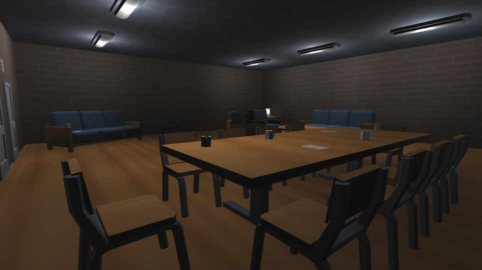
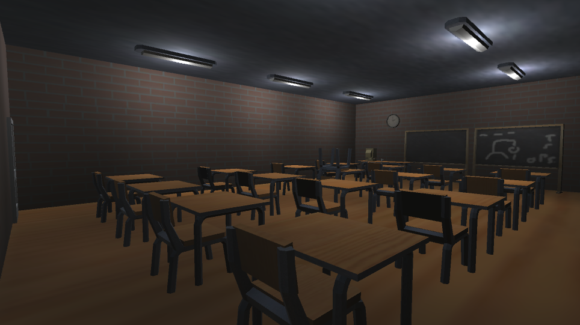

Technologies used:
- C#
- Unity
- Blender
Somnum Opus was a horror game that some classmates and I created for a school assignment. The game was created using the Unity game-engine and programmed in C#. All the 3D models in the game were made from scratch using the modeling software Blender. All the sound effects as well as the soundtrack were also created specifically for this game.
My role in the development was the programmer and lead 3D modeler. Though I had a lot of experience programming in Unity, I had very limited knowledge of Blender going into this project. Juggling both programming and modeling was very challenging, but somehow, we managed to actually have a playable game just before the deadline.
In this game you play as a janitor updating the computers at a high school, during the night. However, there may or may not be a demon trapped in the computers. The art style was inspired by early PlayStation 1 games, which also worked to my advantage as 3D modeler. We tried to focus more on eeriness and atmosphere as apposed to cheap jumpscares, which I feed we succeeded in.
Download the game